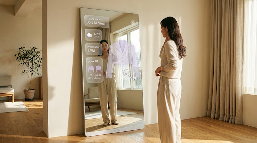
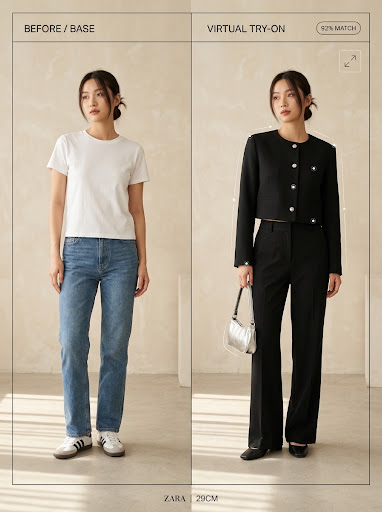

Dress for your mood. Style for your day.
체형, 취향, 내 옷장, 날씨와 일정까지.
MUSE가 오늘의 나에게 가장 어울리는 스타일을 추천합니다.

MUSE는 단순히 옷을 추천하는 것이 아니라, 당신에게 꼭 맞는 스타일을 찾아줍니다.
“이 옷이 나한테 어울릴까?”
모델 착용 사진과 내 체형의 차이 때문에 구매하고도 옷장 속에 그대로 방치되는 옷들.
“오늘 일정에는 너무 꾸민 것 같나?”
캐주얼 미팅인지 격식 있는 발표인지, 애매한 TPO 사이에서 생기는 스타일링 망설임.
“옷은 많은데 정작 입을 게 없어.”
가득 찬 옷장 앞에서 매일 아침 반복되는 고민과 소모적인 피로감.
“온라인에서 예뻤는데 내가 입으면 어떨까?”
직접 입어보지 않고는 감이 안 오는 실루엣과 소재의 드레이프감.
“이 코디에 어떤 가방을 들어야 하지?”
상의와 팬츠는 골랐지만 신발과 백, 실버 액세서리까지 완결된 룩을 완성하는 마무리의 부재.
“MUSE는 옷을 추천하는 것이 아니라
나에게 어울리는 스타일을 찾아줍니다.”
편향된 트렌드 대신, 오직 사용자에게 집중된 4가지 핵심 축을 통해 당신의 스타일 DNA를 모델링합니다.
MediaPipe로 자세와 신체 비율을 분석하고, ToF 깊이 센서를 활용해 체형 정보를 추정합니다. 분석 결과는 개인화 코디 추천에 활용됩니다.
FashionSigLIP으로 만든 의류 특징 벡터 위에 Wear/Pass 피드백을 쌓아 사용자 취향 벡터를 갱신합니다. 모델 자체는 재학습하지 않습니다.
촬영 매트에서 의류 사진을 촬영하고, 자동 배경 제거와 AI 속성 분석을 거쳐 나만의 디지털 옷장을 구성합니다.
옷의 종류, 색상, 패턴, 계절 정보를 분석해 코디 추천에 활용합니다. (등록 목표: 5초 이내)
외출 시점의 날씨와 사용자가 동의한 일정의 격식을 고려해 스타일링 규칙을 적용합니다.
MUSE 서버에서 FashionSigLIP 특징 벡터와 사용자 취향 벡터, 날씨·일정 필터, 스타일링 규칙을 결합해 Top 3 코디를 고릅니다.
Top 3 추천 응답 목표: 2초 이내 (실측 전)거울과 옷장 데이터를 연결해 완성할 다섯 가지 MVP 스타일링 경험입니다.
체형, 취향, 보유 의류, 날씨와 일정을 함께 고려해 오늘의 코디 Top 3를 추천합니다.
FashionSigLIP 특징 벡터·취향 벡터와 스타일링 규칙 엔진을 결합해 후보를 정렬하며, 최근 7일 반복 코디는 줄입니다.
날씨와 사용자가 동의한 일정 정보를 바탕으로 상황에 맞는 스타일링 제안을 전달합니다.
“오늘은 중요한 발표가 있어 포멀하면서 편안한 크롭 블레이저 룩을 추천해요.”
아직 보유하지 않은 옷도 AI 가상 피팅으로 미리 확인할 수 있습니다. 사용자의 동의를 받은 이미지를 활용해 예상 착용 모습을 생성합니다. 실시간 3D AR 드레이핑이 아닌 2D 이미지 생성 방식입니다.
촬영 매트 사진 한 장으로 옷의 종류, 색상, 패턴, 계절 정보를 자동 추출하여 나만의 디지털 옷장을 구축하고 실현 가능한 코디를 제안합니다.
예시 옷장 데이터
사용할수록 더 정교해지는 지속적 스타일 진화 루프
“Minimal 스타일을 선호하시나요?”
초기 실루엣 선호도 탐색 및 베이직 아이템 취향 수집
“블랙 아우터 + 와이드핏 취향 예시”
반복 착용 패턴과 계절별 실루엣 선호가 취향 벡터에 반영되는 단계 (예시)
“Closer to your style”
보유 의류와 선호를 고려한 3가지 코디 후보 (디자인 예시)
외출 전 반복되는 코디 고민을 줄이고, 보다 가벼운 아침 스타일링 경험을 지향합니다.
센서가 착용자를 인식하며 미러 디스플레이가 앰비언트 모드에서 스타일링 모드로 전환됩니다.
“오늘 오후 3시 디자인 스프린트 발표가 있습니다. 쌀쌀한 환절기 날씨에 맞는 블레이저를 추천합니다.”
소장 중인 슬랙스와 니트를 기본으로, TPO 일치도가 가장 높은 3가지 룩을 거울 표면에 나란히 렌더링.
MediaPipe Hands 손짓 또는 터치로 Look 01~03을 넘겨 보고, 마음에 들지 않는 후보는 Pass로 표시합니다.
Wear 선택은 착용 이력과 취향 벡터에 반영되고, 최근 7일 반복 방지 규칙에 사용됩니다.
“오늘의 코디를 더 가볍게.”
아직 보유하지 않은 옷도 AI 가상 피팅으로 미리 확인할 수 있습니다.
사용자의 동의를 받은 이미지를 활용해 예상 착용 모습을 생성합니다.

크롭된 기장감과 정제된 숄더 라인의 테일러드 실루엣. 사용자가 별도 동의한 사진과 상품 이미지를 외부 VTON API로 보내 2D 착용 이미지를 생성합니다.
소장 중인 하의와의 조화를 먼저 검토한 후 구매를 결정하세요. 가상 피팅은 별도 동의한 경우에만 요청되며, 생성 결과가 품질 기준에 못 미치면 이미지 대신 상품 정보를 안내하도록 설계합니다.
매일의 선택이 쌓일수록, MUSE는 나의 스타일에 조금씩 더 가까워집니다.
Wear 또는 Pass로 오늘의 코디에 대한 선호를 거울 앞에서 원터치로 표현합니다.
선택한 옷의 패션 특징(실루엣, 색상, 소재감)을 사용자 취향 벡터에 반영합니다.
업데이트된 취향 정보를 활용해 다음 날 코디의 추천 순위(Top 3 Ranking)를 정교하게 조정합니다.
“MUSE는 유행을 쫓지 않고, 오직 당신의 고유한 취향을 배웁니다.”
체형 정보(MediaPipe+ToF)와 옷장 데이터, 날씨·일정 등 추천에 필요한 정보를 분석합니다.
Pose Tracking 15 FPS+ | Vision LLM개인화된 코디 Top 3를 제안하고, 원하는 상품은 AI 가상 피팅(VTON API)으로 확인할 수 있습니다.
추천 2초 이내 | 피팅 이미지 15초 이내Wear/Pass 피드백을 반영해 사용자 취향 벡터를 경량 업데이트하고 다음 추천의 순위를 조정합니다.
Lightweight Vector RankingMediaPipe 스켈레톤 트래킹과 ToF 깊이 센서를 통한 안정적 신체 비율 추정
FashionSigLIP 특징 벡터와 규칙 엔진 기반의 TPO 맞춤 Top 3 코디 도출
촬영 매트 크로마키 배경 제거 및 Vision LLM 기반 카테고리/색상/패턴 태깅
동의 기반 사용자 이미지로 외부 VTON API가 2D 가상 피팅 이미지 생성
피부 톤과 조명 환경에 따른 사계절 퍼스널 컬러 진단
착장 실루엣과 얼굴형에 최적화된 헤어 스타일링 가이드
내 옷장과의 호환성을 검증해 주는 스마트 위시리스트
의류 착용 주기 분석 및 친환경 리세일 타이밍 제안
자연스러운 대화로 스타일링을 수정하는 보이스 컨시어지
내일 아침, 옷장보다 먼저 MUSE에게 물어보세요.
MUSE MVP 개발·검증 중 · 서비스 이용 및 가상 피팅 API는 아직 연결되지 않았습니다.